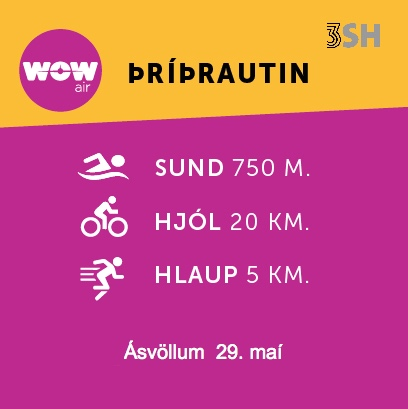

Skráningu er lokið
Keppni lokið
Úrslitin er að finna á thriko.is/live
Sunnudaginn 29.maí verður keppt í WOW þríþrautinni sem fram fer frá Ásvallalaug í Hafnarfirði. Vegalengdin er stöðluð hálf-ólympísk vegalengd, sem þýðir að keppendur synda 750 m., hjóla 20 km. og hlaupa 5 km.
Keppt verður í fjórum aldursflokkum karla og kvenna, og er aldursskiptingin eftirfarandi:
- 16-29 ára
- 30-39 ára
- 40-49 ára
- 50 ára og eldri
Veitt verða vegleg verðlaun fyrir efstu sætin í karla- og kvennaflokki, og verðlaunapeningar fyrir þrjú efstu sætin í hverjum aldursflokki karla og kvenna.
Einnig verða vegleg útdráttarverðlaun í boði fyrir þáttakendur.
Byrjendaflokkur - Í ár verður aftur boðið upp á byrjendaflokk og þarf að merkja við það í skráningarforminu.
Keppnisgjald er 3.500 kr.
Keppnin er hluti af stigakeppni Þríþrautasambands ÍSÍ og keppt er eftir reglum sambandsins (sjá hér). Allir keppendur eru á eigin ábyrgð í keppnum á vegum 3SH.
ATH, skráningu lýkur fimmtudaginn 26. maí 2016 kl. 14:00 og verður ekki hægt að skrá sig eftir það.
Afhending keppnisgagna fer fram 28. maí 2016 frá kl. 15:00 til kl. 17:00 í anddyri Ásvallalaugar Hafnarfirði.
Brautarskoðun verður í boði stundvíslega kl. 15:00 laugardaginn 28. maí 2016.
Keppnin hefst kl. 9:00 þann 29. maí og eru keppendur beðnir um að mæta í síðasta lagi kl. 8:00: Svæðið opnar kl 7:30 og hefst þá skoðun á hjálmi og hjóli. Sundlaugin opnar kl. 8:00.
Hjólaleiðin er hér.
og byrjun og endir við Ásvallalaug hér: hér.